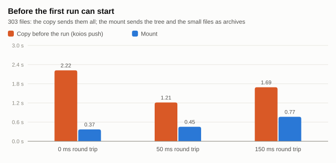
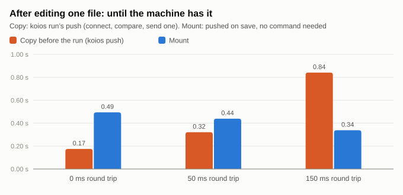
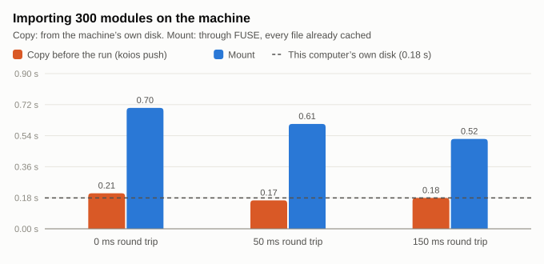
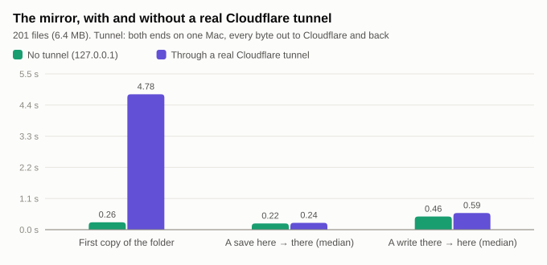

Koios · the Playground · Companion 0.19.0
The code stays on your computer; the GPU reads it there, through the Companion's Cloudflare tunnel, as if it were its own disk. Saves are there in under a second, results come back as they are written, and checkpoints go where the data is kept. What was built, why, how it was checked and measured, and how to try it.
Part 1
Your project's files can stay on your computer while its code runs on Colab's GPU or a GPU server of yours. Before Companion 0.19.0 the code got there as a copy: before each run the changed files were copied over, and after it the results were copied back. With the mount, the GPU machine reads the folder where it is, the way a notebook reads Google Drive once it is mounted. Nothing is copied before a run and nothing is brought back after it.
How it was built, checked and measured, with the step-by-step test plan, is in compute-mount-process.md. Both documents are printed as one PDF, docs/compute-mount-process.pdf (node scripts/compute-mount-pdf.mjs).
This needs Koios Companion 0.19.0 or later on the computer that has the files, and a compute link (compute-link.md).
Storage & compute → Sync → Mount the folder on <machine>. The setting is kept with the project. Whenever the machine doesn't have the folder mounted (a new Colab runtime, say), the page starts the mount again. The chip above the terminal reads Mounted on Colab ⇄ live while it is up. From a terminal on the computer with the files:
koios mount # fuse where the machine allows it, else a live mirror
koios mount --mode mirror
koios unmount # back to copying before each run
koios status # says whether it is mounted, and connectedWhile the folder is mounted, koios run and the page's ▶ Run skip the copy, and Copy now says there is nothing to copy.
| A file… | Lives | Reaches the other side |
|---|---|---|
| of your project (code, configs, notebooks, small results) | on your computer | the machine reads it there; a save on either side is on the other within about a second |
the project's sync rules leave out (data/, wandb/, *.pt, *.ckpt, *.safetensors, by default) | on the machine's own disk, under the mount | put in the project's data place (Google Drive by default, or a computer of yours) a few seconds after it is closed |
| over 100 MB, written on the machine | on the machine's own disk | the data place, never the tunnel |
a cache (__pycache__, .ipynb_checkpoints, .reader/) | on the machine | nowhere |
So a checkpoint written to checkpoints/model.pt is written at local disk speed on the GPU machine and goes to wherever you keep data. It never crosses the tunnel to your laptop. The rules are the ones under Not copied in the Sync pane, and they mean the same thing they did before.
flowchart TB
subgraph gpu["GPU machine"]
P[python train.py] -- "open, read, write" --> M["/content/playgrounds/p · FUSE"]
M --- D[koios_mount daemon]
M -. "checkpoints, data" .-> L[(machine's disk)]
L -. "koios_data" .-> DP[(data place: Drive)]
end
D == "one WebSocket, kept open" ==> E1[Cloudflare edge near the GPU]
E1 == "Cloudflare's network" ==> E2[Cloudflare edge near you]
E2 == "cloudflared (quick tunnel)" ==> C[Companion on your computer]
C --- F[(your project folder)]
C -- "a save, pushed as it happens" --> D
cloudflared hands it on. The browser and the Worker are not on the path, and neither machine accepts a connection from the internet.koios_mount.py) holds one WebSocket to /companion/mount/socket on the Companion's tunnel. It doesn't open a connection per file or per run. If the socket drops, the daemon reconnects with backoff, and the Companion sends the tree again on reconnect.fsync'd), in pieces. The Companion writes it beside the original and swaps it in, so a reader on your computer never sees half a file.~/.reader-companion/mounts/ (0600). It never gets the Companion's token. The socket refuses paths outside the folder, links that lead out of it, and paths the rules say are the machine's own. Unmount forgets the key, which closes every socket that used it./dev/fuse and libfuse 2). This is a real mount, and it is lazy: only what is opened is fetched. The first mount on Colab runs pip install fusepy and, as root, apt-get install fuse libfuse2. Allow about a minute for that.In fuse mode, what was in the folder before the mount is sorted when the mount starts:
.reader/) are kept under the mount.Unmounting puts the machine's own files back in the folder, so copy-before-run works again as it did. A mirror leaves what was there as it was, and sends only what changes after it starts.
The mount is built so a laptop that sleeps, loses its network, or sits on another continent slows a run down at worst. It never stops one.
KOIOS_MOUNT_FILL_FILE_MB, KOIOS_MOUNT_FILL_MB; 0 turns it off). After that the machine reads nothing from your computer, so a sleep mid-run costs nothing for reads.KOIOS_MOUNT_WAIT_S). The program is held up, not crashed. Listings and file sizes never wait: they come from the tree the machine already has.close() succeeds. The queue is saved on disk, so it survives a restart of the daemon. It is sent as soon as the socket is back, and the daemon redials with backoff. If your computer saved the same file in the meantime, the machine's version wins, and the daemon logs it.caffeinate -i -s on macOS, systemd-inhibit on Linux, SetThreadExecutionState on Windows. It lets go when the last machine disconnects. The display can still sleep. A laptop on battery with its lid closed sleeps anyway; nothing a program does changes that, and the three points above cover it. To turn this off, put "keep_awake": false in ~/.reader-companion/config.json.import mymodule and relative paths work from a cell as they do from the console.koios_data.path(...)), not in the project folder.The Companion's default tunnel is a free quick tunnel. It needs no account, but it gets a new ….trycloudflare.com address at every start and can't use Argo. Argo Smart Routing is Cloudflare's paid routing. It carries traffic between Cloudflare's data centres on the paths it currently measures as fastest. For a mount, that is the leg between the edge near the GPU machine and the edge near your computer. To use it, give the Companion a named tunnel on your own Cloudflare account:
reader-companion tunnel setup --hostname koios.example.com --api-token <token>
reader-companion start # or reopen the Koios app
reader-companion tunnel status # named tunnel, Argo onSetup does the following through Cloudflare's API:
koios-<computer id>;https://koios.example.com at the Companion;The API token is not saved. The Companion runs cloudflared tunnel run with the tunnel's token in its environment, not on the command line. Mounts then dial the fixed address, so a restart of the Companion no longer changes it.
If Argo can't be turned on (no billing, or a token without Zone Settings: Edit), setup says why and the tunnel works without it. You can turn Argo on later under your domain → Traffic → Argo Smart Routing. reader-companion tunnel quick goes back to quick tunnels.
companion/tests/live_tunnel.py serves a folder and mounts it through a real tunnel, measures it, and prints:
cd companion && python3 -m tests.live_tunnel # a quick tunnel
KOIOS_LIVE_HOSTNAME=koios.example.com KOIOS_LIVE_TUNNEL_TOKEN=<tunnel token> python3 -m tests.live_tunnel # yours, with ArgoBoth ends run on one computer, but the daemon dials the tunnel's public address, so every byte goes out to Cloudflare and back in. It needs cloudflared to reach Cloudflare's edge: TCP or UDP port 7844 out, and DNS for argotunnel.com. Many CI sandboxes block that; the one this feature was built in did. There, cloudflared was handed a trycloudflare.com address (that request is ordinary HTTPS) but couldn't open the tunnel itself.
| File | What |
|---|---|
companion/reader_companion/koios_mount.py | The machine's side: the socket, the cache, the FUSE operations, the mirror, the data shipper, start/stop/status. Standard library, tornado and fusepy. |
companion/reader_companion/mount.py | The Companion's side: the keys, the socket (MountSocket), the watch, and starting the daemon there through the link's kernel. |
companion/reader_companion/extension.py | ComputeHandler: POST companion/compute with the action mount, unmount or mount-status. GET says whether a machine is connected. |
companion/reader_companion/awake.py | This computer kept from sleeping while a machine has a folder mounted. |
companion/reader_companion/cloudflare.py, tunnel.py | reader-companion tunnel setup: a named tunnel at your hostname, with Argo Smart Routing; the Companion runs it instead of a quick tunnel. |
companion/reader_companion/compute.py | koios mount, koios unmount; koios run and koios push skip the copy while the folder is mounted. |
src/lib/computeLink.ts | mountThroughCompanion, unmountThroughCompanion, linkState. |
src/components/PlaygroundWorkspace.tsx | The switch in the Sync pane, the Mounted chip, and runs that skip the copy. |
companion/tests/live_tunnel.py | The mount over a real tunnel, measured (section 7). |
companion/tests/test_mount.py, test_awake.py, test_cloudflare.py, scripts/compute-link.test.mjs | Tests. These include a real FUSE mount and a mirror, each edited on both sides, and the page's one call against a real Jupyter server standing in for the GPU box. |
Part 2
The companion to compute-mount.md, which describes what the mount is and how to use it. This one is the process: what the code did before, the choices made and the ones turned down, how the pieces fit, what each test run found, what was measured and what it showed, which limits belong to the mount and which to the tunnel, and the steps to try it yourself. It is written so that someone who wasn't in the session can retrace the work and check what it claims.
The branch is claude/epic-darwin-18jc7s. docs/compute-mount-process.pdf prints both documents as one PDF; run node scripts/compute-mount-pdf.mjs to print it again.
When a project's files were in one place and its code ran in another (split mode, filesAreOnMachine false), every command in the console copied the folder first and brought results back afterwards. There were two paths:
flowchart TB
run["▶ Run / a console command"] --> linked{"Files on a Companion,<br/>and the compute linked?"}
linked -- no --> A["<b>Path A · pushFolder</b> (browser)<br/>walks the whole folder · reads every file<br/>writes each one to the machine"]
linked -- yes --> B["<b>Path B · koios push</b> (Companion)<br/>sends size + mtime of every file<br/>the machine answers which it needs<br/>one gzip'd tar of those"]
A --> cmd["the command runs there<br/>in playgrounds/<slug>-<id>"]
B --> cmd
cmd --> pull["pullBack (browser)<br/>runs/ results/ outputs/ *.csv *.json<br/>text, under 2 MB"]
| Path A (browser) | Path B (Companion) | |
|---|---|---|
| Used when | Files in Drive, in the browser, on a plain Jupyter server, or on an unlinked Companion | Files on a Companion with a compute link (0.17.0 on) |
| What goes over | Every file, every time | Files whose size or modification time changed |
| How | One request per file; on Colab, one kernel execute_request per file, the content in base64 | A tar over Jupyter comm messages on one kernel socket |
| Limits | Text only, 2 MB a file, 400 files, 6 folders deep | 100 MB a file, unless --big |
| Results back | pullBack, text only, under 2 MB | the same, through the browser |
| Question | Chosen | Turned down, and why |
|---|---|---|
| How does the machine see the folder? | A FUSE mount, with a live two-way mirror where FUSE isn't allowed | A Python import hook: only import in the notebook kernel would see the files. python train.py, open(), shells and agents would not. sshfs: needs SSH into the laptop from the internet. |
| Which side dials? | The machine dials the Companion | The laptop can't accept connections from the internet, and Colab's runtime only takes requests through its own proxy. The Companion already has an HTTPS address: its tunnel. |
| Over what? | One WebSocket, through the Companion's Cloudflare tunnel | Through the browser (the page's kernel socket): the run would depend on a tab staying open. Through the Worker: an extra hop, and the Worker has no disk. Jupyter comms from the Companion (as koios push does): the Companion would have to keep a kernel socket per machine, renewing Colab's hourly pass. |
| Who notices a change? | The Companion pushes it (it looks over the folder twice a second, stat calls only) | The machine polling: a round trip through Cloudflare for every look. |
| What credential does the machine hold? | A key for one folder (mounts/<hash>.json, 0600) | The Companion's token: it opens every folder, terminals, and the update route. |
| Where do checkpoints go? | The machine's own disk, then the data place (koios_data) | Back to the laptop: gigabytes through the tunnel to a disk that wasn't chosen for data. |
| What decides what is "data"? | The project's existing sync rules (data/, *.pt, …) | A second list to keep in step with the first. |
flowchart TB
subgraph laptop["Your computer"]
page["Koios page"] -- "POST companion/compute<br/>{action: mount}" --> comp["Companion<br/>mount.py · awake.py"]
comp --- folder[("project folder")]
comp --- cfd["cloudflared"]
end
subgraph cf["Cloudflare"]
e2["edge near you"] <== "Argo, when on" ==> e1["edge near the GPU"]
end
subgraph gpu["GPU machine"]
kernel["link's kernel"] -- "starts" --> daemon["koios_mount daemon"]
daemon --- fuse["/content/playgrounds/p<br/>(FUSE)"]
run["python train.py · cells · agents"] --> fuse
daemon --- disk[("machine disk:<br/>cache · checkpoints")]
disk -. "koios_data" .-> dp[("data place<br/>Google Drive")]
end
cfd <== "tunnel" ==> e2
e1 <== "wss://…/companion/mount/socket" ==> daemon
comp -- "Jupyter API (the link)" --> kernel
sequenceDiagram
autonumber
participant Page
participant Comp as Companion
participant K as Link's kernel (GPU)
participant D as koios_mount (GPU)
Page->>Comp: POST companion/compute {root, action: "mount"}
Comp->>Comp: open the tunnel if it isn't · make the folder's key
Comp->>K: execute: write koios_mount.py · pip install fusepy · apt libfuse2 (as root)
K->>D: start the daemon (its own session: outlives the kernel)
D->>Comp: WebSocket wss://<tunnel>/companion/mount/socket?key=…
Comp-->>D: tree: every file's size, mtime, mode · the rules
D->>Comp: pack: the files ≤ 2 MB (Python first)
Comp-->>D: gzip'd archives (8 MB each)
D->>D: sort what was in the folder · mount FUSE
K-->>Comp: status: mounted, ready, mode, warm
Comp-->>Page: 200 {mode, mounted, connected}
Note over D,Comp: from here: the rest of the files in the background (fill), changes pushed both ways
flowchart TB
w["a program on the GPU closes a file it wrote"] --> scratch{"a cache?<br/>__pycache__ · .reader/ · .ipynb_checkpoints"}
scratch -- yes --> stay["stays on the machine<br/>sent nowhere"]
scratch -- no --> rules{"left out by the project's rules?<br/>data/ · wandb/ · *.pt · *.ckpt · *.safetensors"}
rules -- yes --> data["machine's disk, at local speed<br/>→ data place 3 s after the last close"]
rules -- no --> big{"over 100 MB?"}
big -- yes --> data
big -- no --> up{"your computer reachable?"}
up -- yes --> home["written on your computer<br/>beside the file, then swapped in<br/>close() returns when it is there"]
up -- no --> queue["queued on the machine's disk (dirty.json)<br/>close() succeeds · sent when the socket is back"]
sequenceDiagram
participant You as Editor (your computer)
participant Comp as Companion
participant D as koios_mount (GPU)
participant P as train.py (GPU)
You->>You: save model.py
Comp->>Comp: the look every 0.5 s sees a new size or mtime
Comp-->>D: changed {model.py, stat} + the bytes (≤ 512 KB)
D->>D: cache updated · tree updated
P->>D: open model.py
D-->>P: from the cache: no round trip
stateDiagram-v2
[*] --> Connecting
Connecting --> Connected: socket open · tree received
Connected --> Filling: the rest of the files, smallest first
Filling --> Connected: every file ≤ 200 MB is here
Connected --> Away: socket drops (laptop asleep, network gone)
Filling --> Away
Away --> Connecting: redial, 1 s · 2 s · 4 s … 30 s
state Away {
[*] --> Serving
Serving: reads of cached files go on
Serving: listings and sizes come from the tree
Serving: writes queue on disk, close() succeeds
Serving: a read of a file not here waits (≤ 15 min)
}
Connecting --> Connected: queued writes sent first
Each step was chosen so the next could be checked against something real.
| # | Step | What it found |
|---|---|---|
| 1 | Traced the copy paths (an Explore agent over playground.ts, PlaygroundWorkspace.tsx, compute.py, colab.ts) | Section 2. Notebook cells never got a copy; only console commands did. |
| 2 | Checked whether FUSE works in the sandbox: apt-get install fuse libfuse2, pip install fusepy, a hello-world mount | /dev/fuse was there and a mount worked, so every test below is a real FUSE mount, not a stand-in. |
| 3 | Wrote koios_mount.py (the GPU side) and mount.py (the Companion side), then tests/test_mount.py: both ends on one computer, the daemon in a process of its own | The first run failed: the handshake answered 500. MountSocket.write() shadowed tornado's RequestHandler.write. Renamed to write_piece. |
| 4 | Data place test: a checkpoint written on the mount must reach a stand-in Drive folder | Two bugs. (a) A key starting with - was read by argparse as a flag; the daemon now gets --key=…. (b) The status never said where the data went, because nothing rewrote it after a send; the shipper now calls back. |
| 5 | The whole Companion suite | Passed on its own, failed in the suite. An earlier test left the process in a deleted directory, so os.getcwd() inside koios_data raised. The daemon now chdirs to its own state folder. The same run's log showed Uncaught exception from FUSE operation lock: fusepy takes any attribute named after a FUSE operation as that operation, and Ops.lock was a threading.RLock. Renamed to guard, so the kernel's own local locking applies. |
| 6 | The page's one call against a real Jupyter server standing in for the GPU box | It passed the first time once the test waited long enough (tornado's test client stops at 5 s). |
| 7 | Review of the socket's path checks | A symlink inside the folder pointing at /etc/hostname would have been served. Both scan and path now refuse links that lead out of the folder, and there is a test for it. |
| 8 | Review of close() while away | flush raised EIO when the laptop was unreachable, which would crash a training script writing a log. It now leaves the file queued and returns success. |
| 9 | "Away" test: the socket closed under a live mount, a write made, the server started again | FUSE passed. The mirror failed: a file written while away was taken for "something that was there before the mirror started" and never sent. That baseline now applies to the first tree only. |
| 10 | Background fill, reads that wait, a durable write queue, keep-awake, notebook cells in the folder, named tunnel and Argo | Tests for each (section 7). In the away test, a 3 MB file never opened was readable with the laptop gone. |
| 11 | A real tunnel from the sandbox (tests/live_tunnel.py) | Could not be done there. Cloudflare handed out the address (agenda-virginia-pic-packed.trycloudflare.com), because that is an HTTPS call. But cloudflared couldn't resolve _v2-origintunneld._tcp.argotunnel.com or open TCP 7844 to the edge. That is the sandbox's network, not the code. It was done later on a Mac (step 20). |
| 12 | Measured copy against mount, with simulated distance (tests/bench_mount.py) | Section 6. |
| 13 | The suite on Python 3.9 (the oldest the Companion supports, and the Mac's Homebrew Python) | The mount's tests passed. Seven tests in two older modules failed. mover.py packed with tarfile.open in streaming gzip mode with a compresslevel, which needs 3.12; it now gzips the stream itself. test_paper.py used a union type (bytes or str) in an annotation evaluated at run time; it now has from __future__ import annotations. |
| 14 | The suite run again and again | ThroughTheLink failed about once in six runs: the daemon mounted, but the Companion was told it hadn't. A start/stop loop (60 runs) showed why. Several of the daemon's threads wrote status.json through one shared part file, so it could end up half one write and half the other, and unreadable. Each thread now writes a part file of its own. |
| 15 | The same loop, timing stop | Every stop took 10 s and ended in SIGKILL. libfuse takes SIGTERM for itself and acts on it only at the next request. And the daemon, once it did exit, stayed a zombie of the process that started it, so stop thought it was still running. Now the daemon ends by itself when its mount goes, a thread reaps it, and stop treats a zombie as gone. Stop takes 0.05 s, and the suite runs in about 60 s instead of 140 s. |
| 16 | The suite on a Mac (Homebrew Python 3.14) | Every mount test passed (22, the 3 FUSE ones skipped: macOS has no FUSE), including the page's one call through a real Jupyter server, in the mirror mode. Four older tests failed and one hung; the commit before the mount work failed the same way, so they were Mac-only bugs from before. |
| 17 | The four failures (#324) | /var is /private/var on a Mac: koios pull compared a resolved path with an unresolved one. Code fix, and the koios run test compares resolved paths. A zsh theme's PS1 (powerlevel10k, exported by an activated venv) reached koios shell's bash, which printed "bad substitution" instead of a prompt; the remote shell now drops inherited prompt settings. The developer's own /Applications/Koios.app was found before the test's moved app; the usual places became a setting the test empties. |
| 18 | The hangs (#324, #325, #326, #327) | Three tests opened a terminal with pty.fork() from a process that had threads by then, and on macOS such a child can deadlock before it execs. koios shell itself did the same inside the Jupyter kernel. Each now starts the terminal from a fresh single-threaded Python that takes it as its own (setsid, TIOCSCTTY). The first try at that gave no output at all: the terminal was closed on one side before the other had opened it, so the reader saw it as ended. It is now handed over open (pass_fds). The remaining hang was closing a terminal that a leftover sleep still held, which blocks on macOS; the cleanup now ends the shell's whole session and reads while it waits. Every waiting test has a time limit, and test_jobs has a watchdog that prints every stack after 60 s. |
| 19 | The suite on the Mac again | OK (skipped=3), in about a minute: all 177 tests, the three FUSE tests skipped. |
| 20 | tests/live_tunnel.py on the Mac, over a real quick tunnel | The mount works through Cloudflare. Section 6.2 has the numbers. The run showed three gaps in the script, now fixed: it said nothing while a new address took a minute to resolve; it reported the round trip as 0.0 ms, because the mirror reads nothing on demand; and it kept nothing. It now says what it is waiting for, and gives the fix for a cached "no such name". A connection of its own times 20 small requests and a 6 MB read in either mode, and --save writes the numbers to a file. |
companion/tests/bench_mount.py runs both ways on one computer:
koios push (what koios run does before every command).docs/compute-mount-bench.json; run python3 -m tests.bench_mount to measure again.

koios run's push: connect, compare 303 files, send one. It grows with distance because each command opens a new connection, several round trips. The mount's time is the half-second look on your computer plus one trip, so it barely moves with distance. The bigger difference doesn't show in the chart: with the copy someone has to run it, and with the mount nobody does. At 0 ms the copy is quicker, because the look is on a 0.5 s timer.
| Round trip | Cold read of 6 MB through the mount | Same file, cached | A write on the machine, on your computer by |
|---|---|---|---|
| 0 ms | 0.31 s | 0.011 s | the time close() returns |
| 50 ms | 0.32 s | 0.013 s | the time close() returns |
| 150 ms | 0.50 s | 0.011 s | the time close() returns |
Table. A cold read costs the round trips of two 4 MB pieces, plus the work of copying them. Once read, a file is read at disk speed. A file written on the machine is sent while it is being closed, so close() returning means it is on your computer. That is why the "write back" time measured as 0.
What the numbers don't cover: a real Cloudflare path (its own latency, and its throughput for large reads), Colab's disk, and a laptop on Wi-Fi. Section 6.2 covers the first and the last.
tests/live_tunnel.py was run on a MacBook Air over Wi-Fi, through a real quick tunnel (contractors-securities-trucks-intro.trycloudflare.com). Both ends ran on the Mac: the Companion's socket served the folder, and the daemon mounted it by dialling the tunnel's public address. So every byte went out to Cloudflare and came back in, crossing the Wi-Fi twice where a Colab run crosses it once. The Mac has no FUSE, so this was the mirror mode, which copies every file first.
The baseline is the same script and mode with no tunnel (KOIOS_LIVE_LOCAL=1 KOIOS_LIVE_MODE=mirror), median of three runs. It ran in the Linux container the feature was built in, not on the Mac. The raw numbers are in docs/compute-mount-live.json.

| No tunnel | Real tunnel | What the tunnel adds | |
|---|---|---|---|
| Opening the tunnel | — | 7.2 s | once per Companion start |
| The mount ready (mirror: the tree and every file) | 0.46 s | 6.19 s | 5.7 s |
| First copy: 201 files, 6.4 MB | 0.26 s | 4.78 s (≈ 1.3 MB/s) | 4.5 s |
| A save here → there, median (max) | 0.22 s (0.42) | 0.24 s (0.43) | ≈ 0.02 s |
| A write there → here, median (max) | 0.46 s (0.68) | 0.59 s (0.75) | ≈ 0.13 s |
| Round trip of a small request | 0.9 ms | not measured (fixed since) | — |
What it shows:
| Test | What it proves | Real or stand-in |
|---|---|---|
test_mount.Mounted (FUSE) and .Mirrored | Your files are there and current. python main.py runs from the mount. A save here is there within seconds, and a write, rename or delete there happens here. Checkpoints and wandb/ stay on the machine and reach the data place. Caches go nowhere. What was in the folder before is sorted. | Real FUSE, real WebSocket, real processes |
…test_a_write_while_your_computer_is_away… | With the socket gone, a never-opened 3 MB file is readable (fill), and a write succeeds and arrives when the socket is back | Real |
…test_stopping_gives_the_machines_own_files_back… | Unmount puts the machine's files back, and a forgotten key is refused with 403 | Real |
test_mount.SocketRefusals | ../x, absolute paths, .git/, data/, *.pt, and links out of the folder are refused | Real |
test_mount.ThroughTheLink | The page's one call starts the mount on a Jupyter server through the link's kernel. GET reports it connected. Copy says there is nothing to copy. Unmount stops it. | Real Jupyter server as the GPU box |
test_awake | caffeinate / systemd-inhibit are started with the first mount and stopped after the last; turned off by the setting | Stand-in processes |
test_cloudflare | Setup makes the tunnel, ingress, DNS record and Argo, and reuses them when run again. Without Argo billing the tunnel still works. The API token is never saved. The tunnel's token goes in the environment, not on the command line. | A stand-in for Cloudflare's API |
scripts/compute-link.test.mjs | The page's mount calls, their errors, and the words shown | Stand-in fetch |
tests/live_tunnel.py | The mount over a real tunnel, measured | Real Cloudflare; run on a Mac (section 6.2) |
Totals at the last run: 177 Companion tests pass on Linux with Python 3.9 and 3.14 (1 skipped, as before) and on a Mac with Python 3.14 (3 skipped: no FUSE). The page's 75 related tests pass, and tsc -b is clean.
A quick test: if a limit would still apply with a cable straight from the laptop to the GPU, it belongs to the mount.
flowchart LR
subgraph M["Mount limits"]
direction TB
m1["laptop must be reachable<br/>→ fill · reads wait · writes queue · keep awake"]
m2["lid closed on battery sleeps<br/>→ nothing can stop it; the above covers it"]
m3["a file saved on both sides at once<br/>→ the machine's wins, logged"]
m4["notebook cells began in /content<br/>→ moved into the folder"]
m5["FUSE not allowed<br/>→ the mirror"]
m6["first mount on Colab ~1 min<br/>→ once"]
m7["datasets<br/>→ the data place"]
m8["FUSE adds ~0.4 s to 300 imports<br/>→ once per process"]
m1 ~~~ m2 ~~~ m3 ~~~ m4 ~~~ m5 ~~~ m6 ~~~ m7 ~~~ m8
end
subgraph T["Tunnel limits"]
direction TB
t1["first read of a big file<br/>costs a trip → cache · Argo"]
t2["quick tunnel: new address each start<br/>→ named tunnel"]
t3["quick tunnel: no Argo, made for testing<br/>→ named tunnel"]
t4["Argo needs a domain and billing<br/>→ optional"]
t5["first copy ≈ 1.3 MB/s on a quick tunnel<br/>→ FUSE sends small files first · named tunnel"]
t1 ~~~ t2 ~~~ t3 ~~~ t4 ~~~ t5
end
T -. "a dropped tunnel looks like a sleeping laptop:<br/>the mount's handling covers both" .-> M
claude/epic-darwin-18jc7s and deploy the site (or run it locally), so the page has the mount switch.reader-companion --version should say 0.19.0.cd companion
git fetch origin && git checkout claude/epic-darwin-18jc7s # the mount is on this branch until #322 is merged
python3 -m venv .venv && . .venv/bin/activate
pip install -e . fusepy
python3 -m unittest discover -s tests # 177 tests; FUSE ones skip where there's no /dev/fuse (macOS)
cd .. && npm ci && npx tsc -b && node --test scripts/compute-link.test.mjs scripts/companion.test.mjsUse python3 (macOS has no python command outside a virtual environment). On macOS, which has no /dev/fuse without macFUSE, the FUSE tests skip and the mirror tests still run. On Linux, sudo apt-get install fuse libfuse2 first.
cd companion
python3 -m tests.live_tunnel --save ~/koios-live.jsonExpect a trycloudflare.com address within about 10 s. The script then waits for the new name to resolve and says so every few seconds; this can take a minute. Then come "mounted" and these lines:
If it gives up waiting for the name, your computer has cached "no such name" from its first look. On a Mac, run sudo dscacheutil -flushcache; sudo killall -HUP mDNSResponder, then run it again; each run gets a new address. For a baseline without the tunnel on the same computer: KOIOS_LIVE_LOCAL=1 python3 -m tests.live_tunnel.
ls /content/playgrounds/*/ shows your files, and mount | grep koios shows the FUSE mount..py file on your laptop and save it. Within about a second, cat it on Colab.import os; os.getcwd() should be the project's folder, and import yourmodule should work.results/x.json and checkpoints/model.pt. The JSON appears on your laptop; the checkpoint doesn't, and turns up in Drive under Koios/Data/<project>/ a few seconds later.pmset -g assertions | grep caffeinate shows the Companion holding sleep off.cat ~/.koios-mount/*/status.json on Colab shows awaySince and waitingToWrite.reader-companion tunnel setup --hostname koios.yourdomain.com --api-token <token>, then reader-companion start.reader-companion tunnel status should say "named tunnel … Argo Smart Routing on". KOIOS_LIVE_HOSTNAME=koios.yourdomain.com KOIOS_LIVE_TUNNEL_TOKEN=<from ~/.reader-companion/config.json> python3 -m tests.live_tunnelreader-companion tunnel quick to go back to quick tunnels.| Why | How it gets verified | |
|---|---|---|
| The FUSE mount over a real tunnel, and the tunnel's round trip and MB/s | The Mac run was the mirror (no FUSE), with the earlier script | 9.4 (Colab), 9.3 again |
| fusepy and libfuse2 installed by the mount on a real Colab runtime | No Colab here | 9.4, steps 2 and 3 |
| Argo on a real account | Needs your account and billing | 9.5 |
| Keep-awake on a real Mac or Windows PC | Tested with stand-in processes only | 9.4, step 7 |